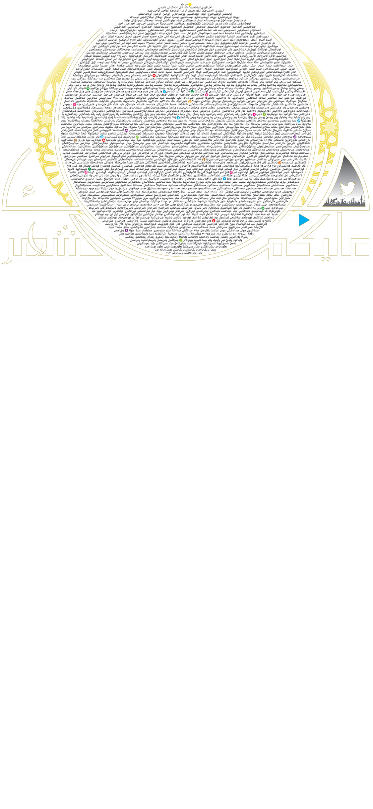

<audio id="ramadan" src="ramadan.mp3" preload="auto"></audio>


<script>

  function ramadan() {
        var audio = document.getElementById("ramadan");

        if (audio.duration > 0 && !audio.paused) {
            audio.pause();
            audio.currentTime = 0;
        } else {
            audio.play();
        }
    }
</script>


<map name="image-map">
  
  
    <area target="_blank" alt="" title="" href="" onclick="javascript:ramadan(); return false;"coords="905,628,946,656,904,690,888,686,880,658,878,640" shape="poly">
  
  
</map>

